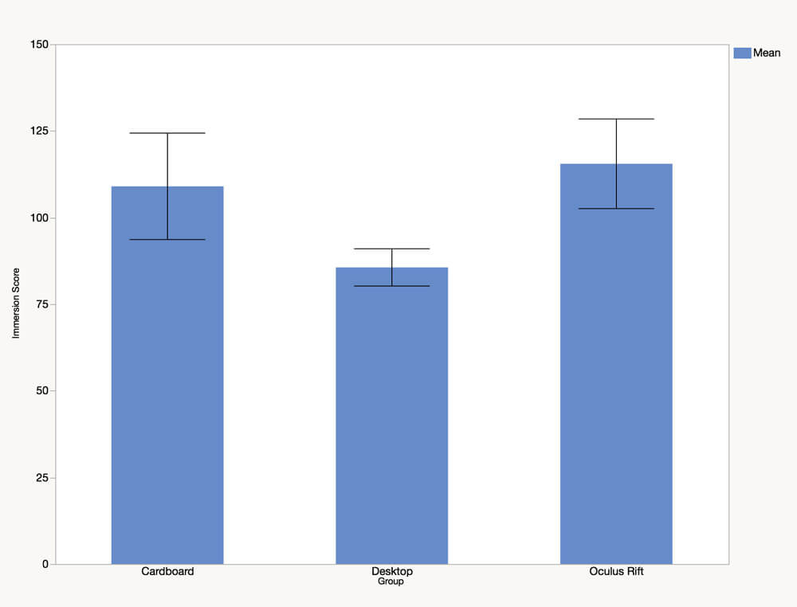
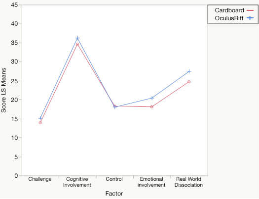

{% raw %}
<main class="ds-container">

  <nav class="breadcrumb" aria-label="Breadcrumb">
    <a href="research.html">Academic research</a>
    <span class="breadcrumb__sep">/</span>
    <span aria-current="page">Immersion in mobile VR</span>
  </nav>

  <header class="hero">
    <p class="h6 hero__kicker">Simon Fraser University &middot; 2016</p>
    <h1 class="display-l hero__title">Immersion in mobile VR vs. a traditional HMD</h1>
  </header>

  <section class="section">
    <div class="prose">

      <h2 class="h3">Experimental design</h2>
      <p class="body">I conducted a study with 30 healthy adult participants to compare the immersive experience between mobile VR and a traditional head-mounted display. We used Cardboard VR with a smartphone for the mobile VR group, and the Oculus Rift DK2 as the traditional HMD. Participants played <em>Cryoblast</em> [1], a VR game for pain management, on Cardboard, Oculus Rift and Desktop (control). Jennett's Immersive Experience Questionnaire (IEQ) [2] was used to collect responses after playing. The study was a between-subjects comparison of immersion across the three platforms.</p>

      <h2 class="h3">Results</h2>
      <p class="body">Immersion across the different displays was analysed using a one-way between-subjects ANOVA. The analysis revealed a significant effect of immersion for the three displays at p&lt;0.05 [F(2, 27) = 8.7824, p = 0.0012].</p>
      <figure>
        <span class="frame"></span>
      </figure>
      <p class="body">Post hoc analysis using the Tukey-Kramer HSD indicated the mean scores for the Oculus Rift (M = 115.5, SD = 18.08) and the Cardboard VR (M = 109, SD = 21.48) were significantly different from the Desktop display (M = 85.6, SD = 7.51). However, the Cardboard VR did not significantly differ from the Oculus Rift (p = 0.6658) in this study &mdash; meaning Cardboard VR, despite having the smallest display screen, was capable of providing a significant immersive experience compared to the high-end Oculus Rift DK2.</p>
      <figure>
        <span class="frame"></span>
      </figure>
      <p class="body">Jennett's IEQ measures five underlying factors of immersion &mdash; challenge, control, real-world dissociation, emotional involvement and cognitive involvement. We analysed the data further to understand the effects of these five factors for the Oculus Rift and Cardboard VR. With one independent variable (display type) and five dependent variables, a one-way MANOVA was performed in SPSS. The analysis revealed significant effects of the five factors among the three displays, F(5, 23) = 313.604, p&lt;0.05, Wilk's Lambda = 0.014.</p>

      <h2 class="h3">References</h2>
      <ol class="body">
        <li>Tong, X., <strong>Amin, A. M.</strong>, Gromala, D., Choo, A. (2015). &ldquo;The Design of an Immersive Mobile Virtual Reality Serious Game in Cardboard Head-Mounted Display for Pain Management,&rdquo; in 5th EAI International Symposium on Pervasive Computing Paradigms for Mental Health.</li>
        <li>C. Jennett et al. (2008). &ldquo;Measuring and defining the experience of immersion in games,&rdquo; Int. J. Hum.-Comput. Stud., vol. 66, no. 9, pp. 641&ndash;661.</li>
        <li><strong>A. Amin</strong>, D. Gromala, X. Tong, and C. Shaw (2016). &ldquo;Immersion in Cardboard VR Compared to a Traditional Head-Mounted Display,&rdquo; in <em>Virtual, Augmented and Mixed Reality</em>, S. Lackey and R. Shumaker, Eds. Springer International Publishing, pp. 269&ndash;276.</li>
      </ol>

      <div class="actions">
        <a href="research.html" class="btn btn--secondary">
          <svg viewBox="0 0 24 24" fill="none" stroke="currentColor" stroke-width="2" stroke-linecap="round" stroke-linejoin="round" aria-hidden="true"><path d="M19 12H5M11 18l-6-6 6-6"/></svg>
          Back to research
        </a>
      </div>

    </div>
  </section>

</main>
{% endraw %}
